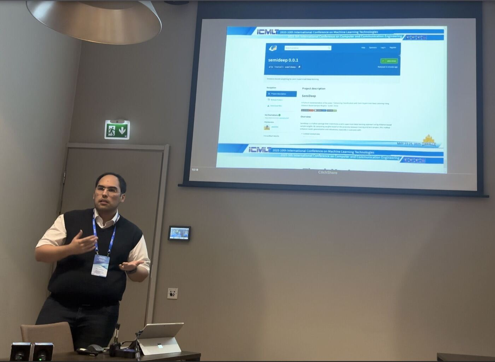
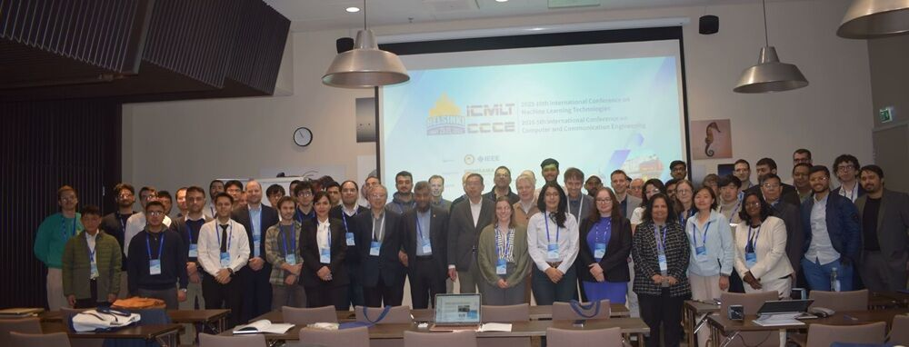
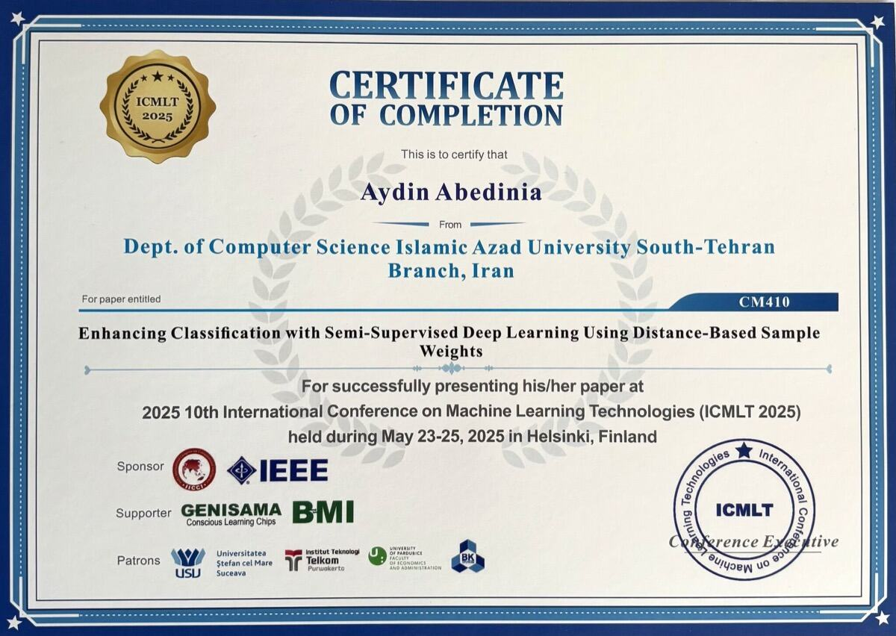

I work on making machine learning models run well on real hardware. My research is on
edge AI — hardware-aware inference, quantisation, and vision–language models
under tight latency, memory and energy budgets. I am a PhD researcher at the
Elios Lab, DITEN, University of Genoa,
in the JD-ICE joint doctorate with Universidad Carlos III de Madrid and Queen Mary University of London.
Before that I spent eight years at Snapp, Iran's largest ride-hailing platform,
most recently as Senior Engineering Manager for Backend & AI Platform. My engineering work is
MLOps, LLMOps and AI platform: model serving, feature stores, deployment
automation, and the observability that keeps ML systems honest in production.
The thread through my work is getting reliable intelligence out of constrained resources.
It started with scarce labels — semi-supervised learning — and now runs through scarce compute:
what survives when a model has to answer inside a latency budget, on a device, next to a person
or a vehicle.
Hardware-aware inference for vision transformers and vision–language models
Quantisation trade-offs (FP32 / FP16 / INT8) and what they actually cost in accuracy
On-device generative pipelines — speech-to-text → language model → text-to-speech on Jetson, Raspberry Pi and STM32MP2
Real-time driving-scenario video understanding, benchmarked across NVIDIA H100 and Jetson Orin Nano
Semi-supervised learning: distance-based sample weighting for trees and deep networks
Programme
JD-ICE — Joint Doctorate in Interactive and Cognitive Environments (cycle XLI)
Host lab
Elios Lab, DITEN, Università degli Studi di Genova
Partners
Universidad Carlos III de Madrid · Queen Mary University of London
P. Firpo, R. Berta, F. Bellotti, L. Lazzaroni, M. Fresta, A. Pighetti, A. Abedinia, N. Yoonesi, D. P. Pau
Journal of Systems Architecture · Elsevier · 2026
A fully local speech-to-text → language-model → text-to-speech pipeline (Moonshine, Piper, and four quantised LMs from 1.2B to 8B parameters), deployed on an NVIDIA Jetson AGX Orin, a Raspberry Pi 5 and an STM32MP257F-EV1, and characterised on thermostat and washing-machine use cases.
An open-source FPGA framework for extremely quantized edge AI
H. Ballout, R. Berta, A. Saad, L. Lazzaroni, O. Srour, M. Fresta, A. Abedinia, F. Bellotti
10th International Conference on Machine Learning Technologies (ICMLT) · IEEE · Helsinki, 2025 · oral
Weights training samples by their distance to the test distribution, down-weighting noisy and out-of-distribution examples. Helps most when labels are few or classes are imbalanced.
I presented Enhancing classification with semi-supervised deep learning using distance-based
sample weights as an oral talk at the 10th International Conference on Machine Learning
Technologies, 23–25 May 2025. The reference implementation went up on PyPI as
semideep during the session.

Presenting the paper — the freshly released semideep package on screen.

Conference group photo, ICMLT / CCCE 2025.

Certificate of presentation, sponsored by IEEE.
Open source
The published methods ship with installable implementations.
Decision trees written from scratch in Rust, to see what tree learning costs when you control the memory layout.
Experience
Nov 2025 — present
Doctoral Researcher
Elios Lab, DITEN — Università degli Studi di Genova
Hardware-aware benchmarking of visual backbones for real-time video understanding on H100 and
Jetson Orin Nano; quantisation trade-offs in throughput, accuracy and energy. Benchmark harness
released as open source.
Founded and led an 11-engineer AI Platform team owning the ML infrastructure behind the product, on-call included.
Built the online/offline feature store and inference gateway serving roughly 80M predictions a day at sub-50 ms p99.
Standardised model deployment: Kubernetes and Helm across datacentres, CI/CD with GitLab CI and GitHub Actions, Terraform rollouts, staged releases with validation gates.
Migrated high-traffic PHP services to event-driven Go on NATS, holding p99 steady through roughly 10× user growth.
Sep 2016 — Apr 2017
Senior Software Engineer — Backend
GSM Group — Tehran, Iran
Backend and data services for telecom products in Django, PHP and MySQL; query tuning,
indexing and a Redis cache layer cut execution time on high-frequency APIs by about 60%.
Teaching & mentoring
2026
Instructor — Agentic AI Mini-Camp
Quera
Project-based course on building AI agents rather than prompting models: RAG and vector
databases, orchestration, tool design, memory, and human-in-the-loop workflows.
Free 1:1 sessions on backend and ML system design, Kubernetes and model serving, and career
direction for engineers moving toward senior and lead roles.